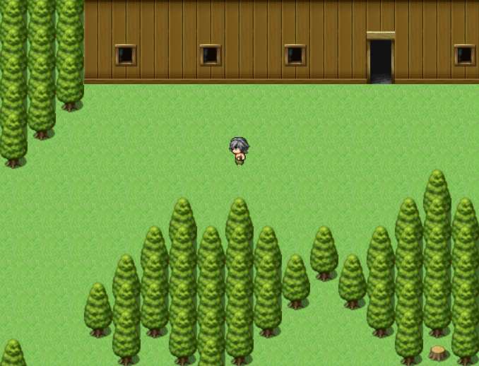
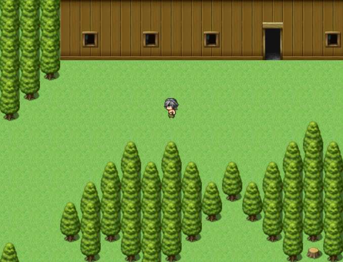
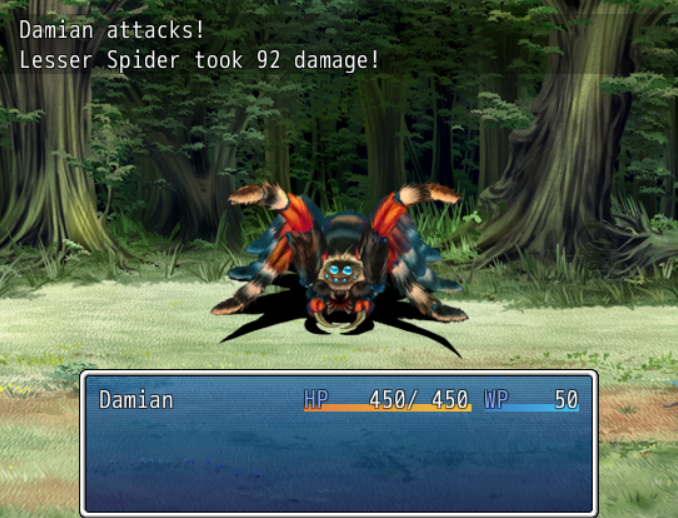
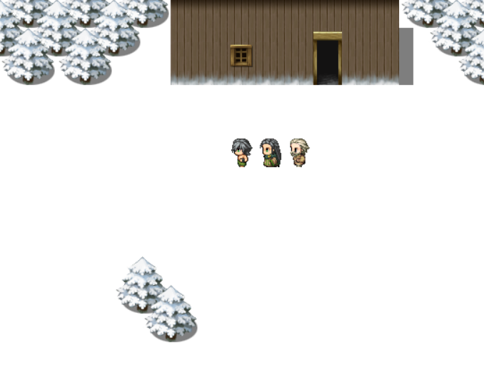
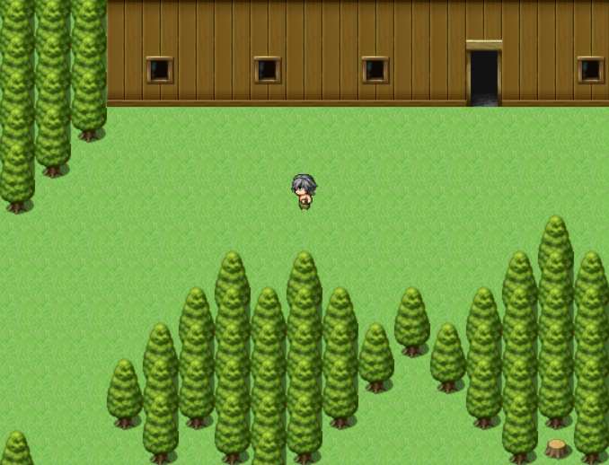
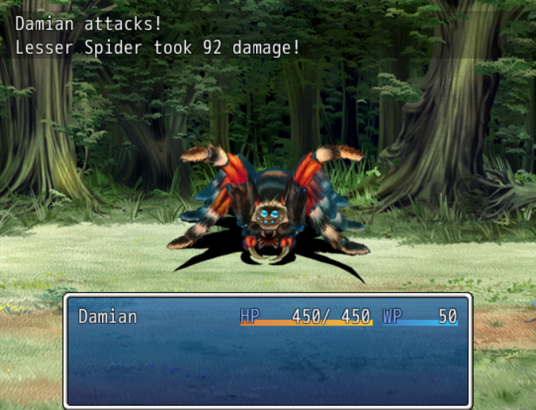
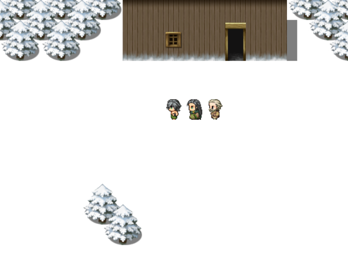

 



| Status | Cancelled (demo available) |
| Year | 2015 |
| Genre | RPG |
| Engine | RPG Maker VX Ace |


Crystalline Dreams was intended to be a large-scale, story-driven JRPG in the style of Final Fantasy and other classics. An unnamed kingdom is under a mysterious threat, and a peasant named Damian gets chosen by the Eternal Sleeper to go on a quest to save it. Just another average RPG story.
I didn’t manage to make much of the game before ultimately deciding to scrap it, but the demo showcases the main features it was going to have. Among the basics of the JRPG genre, it was also going to feature puzzles, “secrets” and minibosses.